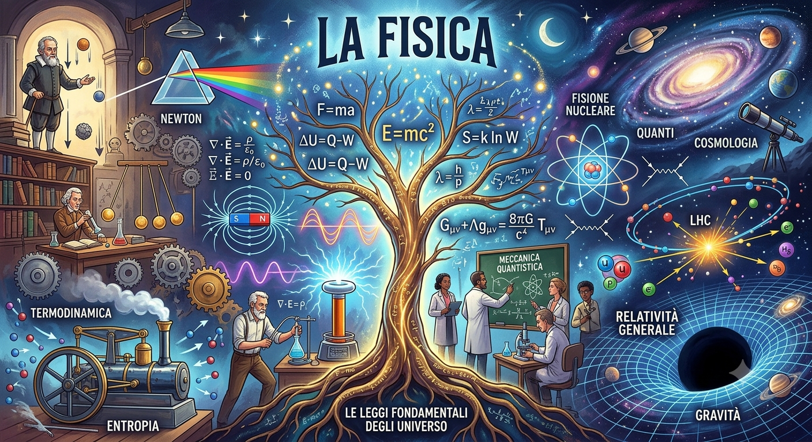
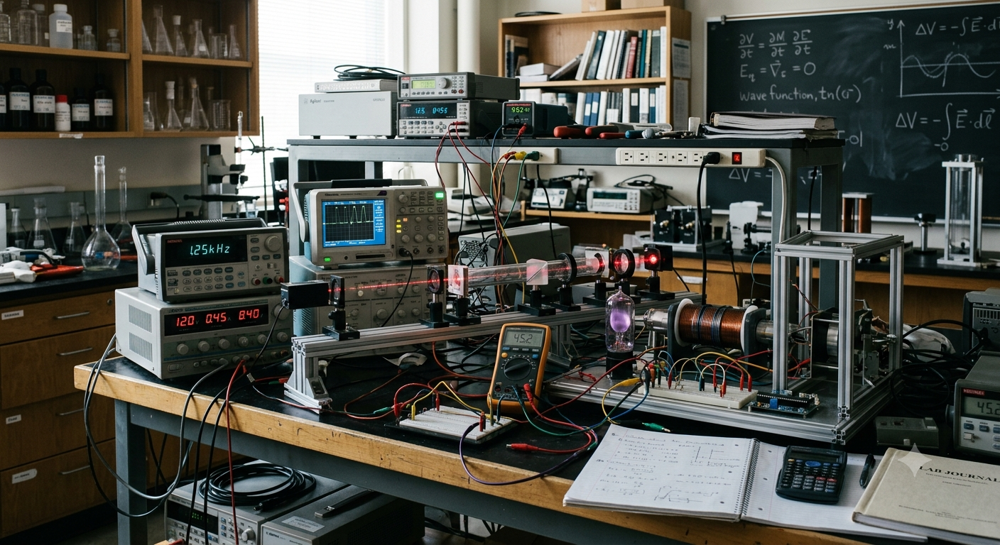

Benvenuto nel mio angolo di web dove racconto i miei progetti e le mie attività
Mi chiamo Andrea sono un perito informatico. Studio Fisica presso l'università statale di Milano e mi piace condividere il mio lavoro a scopo informativo e didattico.
Attualmente sto lavorando allo sviluppo web dei siti e di tutta la loro parte di front-end e back-end
Condivido appunti, formule o riflessioni su argomenti che mi appassionano, come la matematica o la fisica.
✉️ Email: andreafavaro.com@gmail.com
🔗 Profilo Linkedin: Linkedin
📞 Recapito telefonico: 3249547784
Raccolta di appunti, esercizi svolti e spiegazioni di algebra, analisi e geometria.
Vedi la raccolta
Approfondimenti di meccanica, termodinamica ed elettromagnetismo con formule e grafici.
Vedi la raccoltaGuide pratiche alla programmazione, logica del codice e progetti di sviluppo web.
Vedi la raccolta